Before
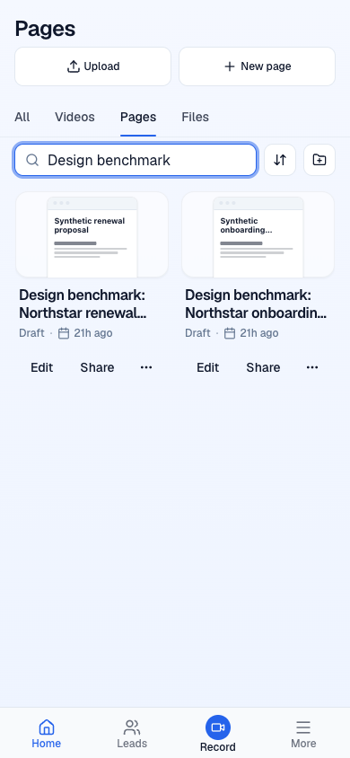
Clarity design study · updated 5 November 2026
Evidence and iterations, still in progress. No full-product score is established.
These independent comparisons cover the same 86% of criterion weight for Journey Page management only. GPT recommends keeping the rows. Opus recommends another iteration on their composition. Neither review establishes a full-Library or full-product grade.
Line: before 468eea53d. Bar: after 873b8d85c. Both reviews locked their ratings before calculations. Exact sums and coverage are in the score data.

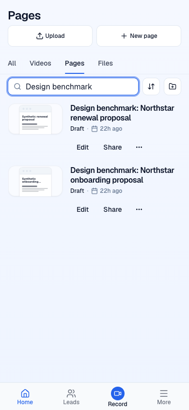
Both phone widths show full titles. Published now appears explicitly; the other known stages retain their labels. Desktop geometry matches the baseline. Edit, Share, menus, search and picker cancellation passed the exercised checks.
At 320px the filtered pair ends about 302px earlier. At 390px it is about 22px taller, and the whole five-page list is about 58px taller. Small previews and action placement still need work. The existing bottom-navigation overlap remains reachable by scrolling.
Twenty-five focused tests, the full local gate, build and current CI passed. E2E Smoke and non-preview deploys were skipped. True browser zoom, native touch, Safari, screen readers and the Unpublished state remain unverified. Coarse-pointer sizing used a temporary CSS branch override, not a native device. Paint omissions are recorded as capture limitations. No protected document changed.
Both reviewers recommend keeping the alignment menu. These fresh comparisons share 86% of rubric weight and grade this control only.
Line: before 163d5fa58. Bar: after 468eea53d. The automatic three-button bar is replaced by a focus-only trigger with explicit Left, Center and Right choices. The next writing field remains readable.

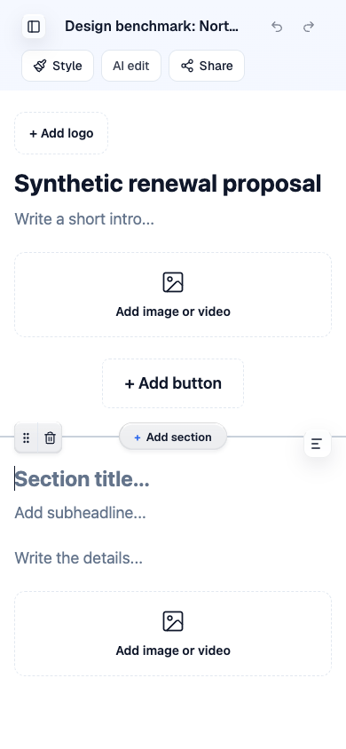
Current Chromium checks pass for shortcut rings, caret restoration, pointer and keyboard selection, narrow-logo clearance and clipped-panel recovery. Earlier menu and logo checks retain their 3715dce3f attribution. The preview base changed only AI upload-language code and related tests, with no UI-file changes.
The control remains below the 9/10 target. Real-device software-keyboard behavior, Safari and assistive technology were not covered by these ratings. Reviewers also question how clearly the trigger is associated with its heading.
Both reviewers recommend keeping this placement change. This chart uses the same criteria across both reviewers and phases, covering 72% of rubric weight. It grades section controls only.
Line: before at 38a0ab840. Bar: after at 163d5fa58. The control row moves above the title when the side gutter is too narrow. Default desktop placement is unchanged.
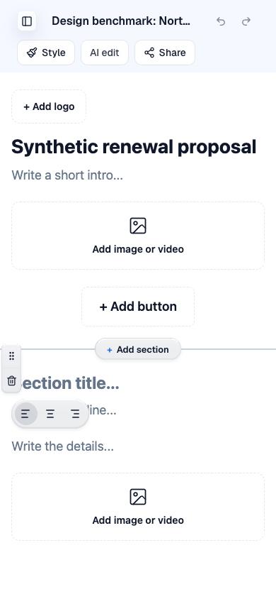
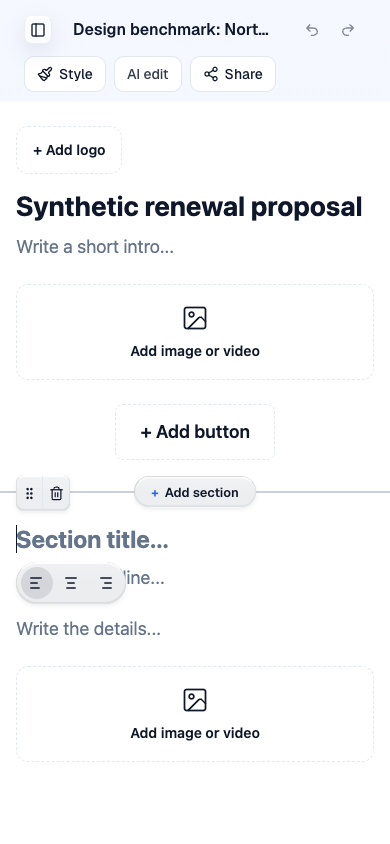
Measured phone text clearance, tested menus, keyboard reorder, real pointer drag, removal and Undo passed. The full theme-by-width matrix and first-movement drag paint remain unverified. Invisible controls still accept clicks, and the alignment bar still covers the next field. These limits remain visible in the scores. No full-product grade or 9/10 result is claimed.
Both reviewers recommend keeping the next editor iteration. These fresh scores compare the same eleven criteria, covering 86% of rubric weight. They assess writing entry and the empty editor layout, not the whole editor or product.
The line marks before; the blue bar shows after. Before: 2c4af7b41. After: 38a0ab840. These are new matched judgments, not a continuation of the earlier panel's numbers.
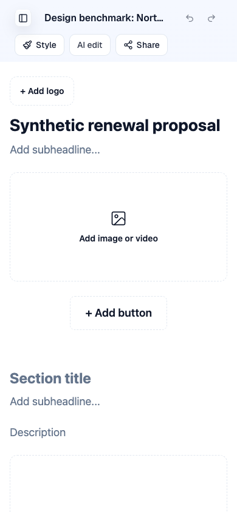
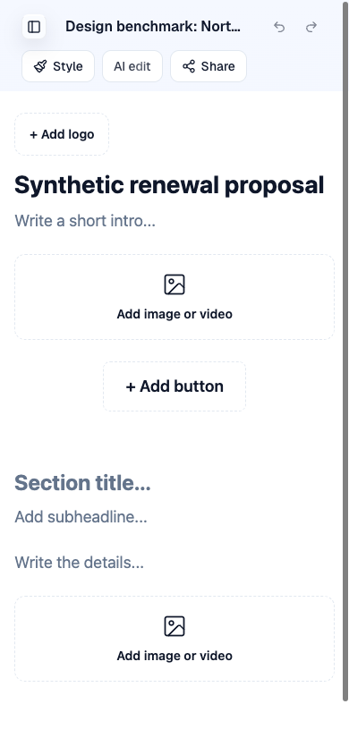
One click now starts writing without inserting placeholder copy. Empty prompts return after deletion and native undo/redo. Both media slots measure 96px; all five writing fields and both slots fit in the first viewport at the three tested widths. Default and Aurora history checks pass. Exact initial typed values and media-selection checks retain their earlier b681b3b5a attribution.
The revised design still falls short of 9/10. Reviewer concerns include the gap around Add button and floating controls obstructing writing on phones. Safari, native input methods, screen readers, full onboarding and billing, and the Gemini panel remain unverified.
Both independent reviewers recommend keeping this iteration. The same eleven criteria cover 86% of rubric weight in both phases. These are scores for the observed editor state, not the whole editor or product.
The line marks the before score; the blue bar shows after. Baseline ae81edeb3; verified candidate 2c4af7b41. Both media placeholders now use the same label and dashed treatment. Share is quieter on an empty draft and becomes filled when publishable content is entered. Text-only pages remain supported.

Current browser checks passed at 320, 390 and 1280 pixels, including keyboard activation, focus return, Default and Aurora label contrast, and readiness after typing. The protected comparator stayed unchanged. Synthetic test edits were restored, with revision metadata advancing. The existing story-picker cancellation write remains a separate follow-up.
Neither reviewer scored this state at 9/10. Writing guidance and the large empty media areas remain concerns. Gemini, complete onboarding/billing states, assistive technology and real hardware remain outside this evidence.
Scoped changes have passed checks on the PR preview: Leads, editor controls, recorder recovery, email validation, the homepage example, Library cards, Settings navigation, private saved-draft review and Help readability. Production is unchanged. No whole-product score is established.
Open the PR preview · Review PR 1692
At ae81edeb3, the final shared-dialog correction passes the full local gate, build, eight dialog tests and 25 affected tests. Independent browser checks confirm that Leads Details opens on the first click after a closed dialog crosses the phone breakpoint in either direction. Resizing an open dialog preserves its content; dismissal restores focus. Share and private draft review also pass. All 17 test leads and the protected proposal remain unchanged.
Current CI, preview, guards and proof checks passed. CI E2E and deployment jobs were skipped. The separate four-test public-page smoke passed on the preceding 18221ec50 revision. The PR remains draft and unmerged, with no formal GitHub approval. This verifies the scoped fix and does not establish a 9/10 design score.
Each row uses one independent GPT-6.1 Sol review and the same criteria before and after. The areas and evidence differ, so these rows do not rank the areas against one another.
| Area reviewed | Before / 10 | After / 10 | Shared criterion weight |
|---|---|---|---|
| Homepage hero | 5.54 | 6.91 | 70 / 100 |
| Library cards | 5.62 | 7.26 | 78 / 100 |
| Settings navigation | 6.13 | 7.03 | 78 / 100 |
| Share and saved-draft review | 6.72 | 7.90 | 78 / 100 |
| Leads listing and Details | 4.92 | 7.49 | 78 / 100 |
These are partial design ratings, not complete scores for marketing, Library or Settings. Missing criteria are excluded, never filled with zero. Scores vary between reviewers and rounds; the latest hero review rated the preceding version 6.81 and the presenter version 6.91. An earlier review rated another hero comparison 7.46. Treat those as separate judgments, not a measured decline.
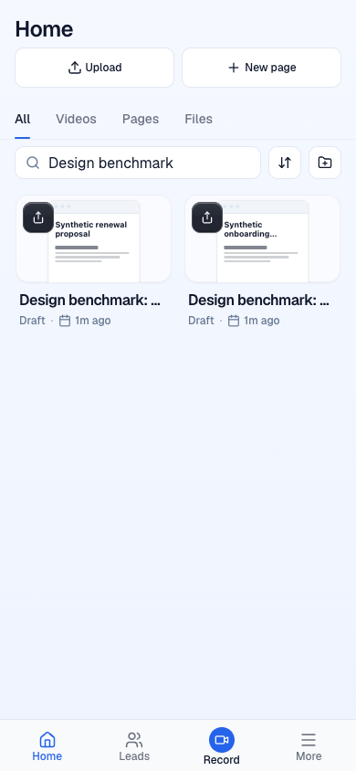
Baseline 98397d41d. Two synthetic draft proposals.
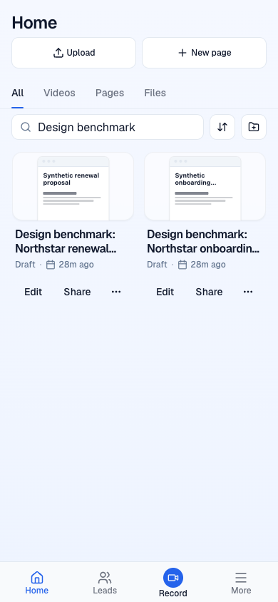
Verified cb3b8772e. At 320px, cards use one column so full titles fit. The reviewer retains the change and flags vertical density for further work.

Baseline 8ab318a6. Public marketing capture.

Verified 98397d41d. The example uses a still from Clarity's public walkthrough. Mobile proof placement and limited workflow demonstration remain weaknesses.

Verified ac1d98546. All five destinations are visible without sideways scrolling at 320px and 390px. Targets are 44px high, focus rings remain visible, and measured inactive-label contrast is at least 9.11:1. The tradeoff is a taller header: 141px at 320px instead of 45px. Private account screenshots are excluded from this public report.
One fresh review scored the original sharing flow at 6.72, the first private preview at 6.49, and the refined preview at 7.90 out of 10. All three use the same 78% criterion-weight subset. The full current partial, including observed states, is 7.91 over 86% of weight. Accessibility and performance remain unscored.
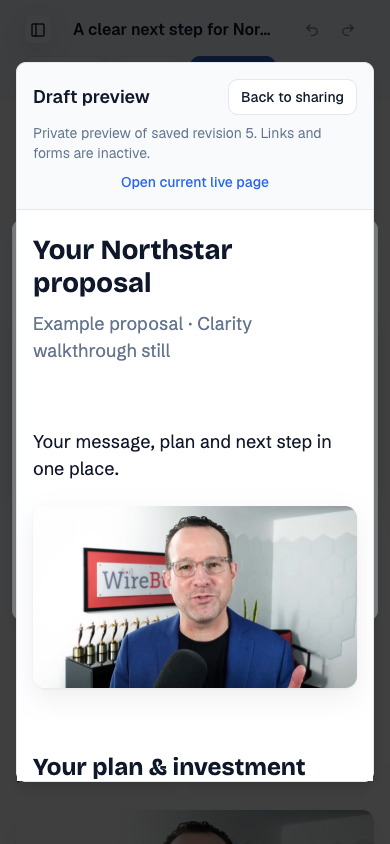
6ffaae46a. The frame reduces space for the proposal.
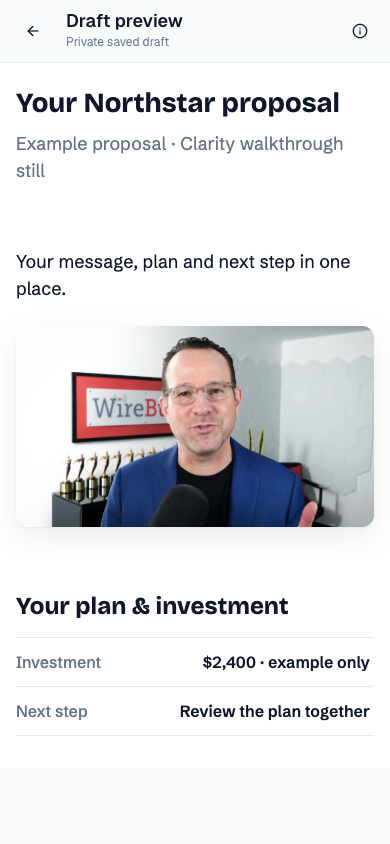
513cbe276. The 63px toolbar keeps a private saved-draft label visible. Revision details and the live link remain in Preview details. At 320px and 390px, content insets and line breaks match the live page.
Save/retry, publication separation, keyboard return, resize behavior, independent themes and the restricted PDF viewer have scoped runtime evidence. The preview does not publish. Read-only PDF zoom and pan are the next design limitation to investigate.
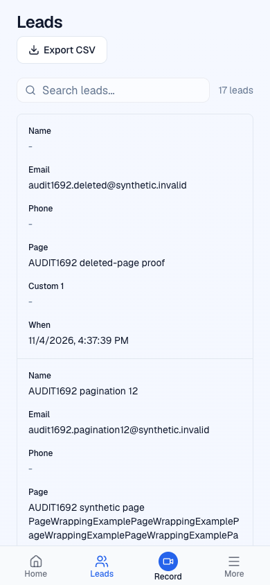
513cbe276. One record occupies most of the first viewport.
e9f7510a4. Six complete summaries fit above navigation. Details retains both phone numbers, custom answers and the exact submission time.
The matched design score improves from 4.92 to 7.49 over 78% of criterion weight. The current observed partial is 7.26 over 96%, including limited state and accessibility evidence. Performance remains unscored. Export contents, filtering, search and all 17 records survived the change. Email text measures at least 9.01:1 and the focused close control 4.94:1. Native touch, browser zoom and screen-reader behavior remain unassessed.
These ratings describe narrow tasks and use different evidence boundaries.
| Task | Weighted score / 10 | Criterion weight observed |
|---|---|---|
| First phone Leads fix, historical | 6.52 | 96 / 100 |
| Editor toolbar and palette | 7.27 | 88 / 100 |
| Missing-device recorder setup | 7.33 | 96 / 100 |
| Email-entry validation | 7.42 | 96 / 100 |
Outstanding evidence includes the three-model panel, signed-in competitor tasks, some onboarding and billing states, and broader accessibility and performance testing. Opus baseline and current-app reviews are complete. Gemini remains blocked by Cursor sign-in. No weekly quota warning has been observed; account balances are unavailable. The 9/10 goal remains unproven.
The latest Help iteration at 18221ec50 uses compact unopened rows with verified durations. Opening a lesson expands its player. Keyboard focus moves into the player; pointer activation does not show a keyboard-only outline. Category navigation retains its own focus.
Fresh matched review of full-width cards versus compact rows. Both reviewers use the same 88% supported criterion weight here. These scores are not a cumulative series with earlier review rounds.
All nine lessons were traversed before measuring. Current document heights are 1,251px at 320px and 1,134px at 390px. Earlier full-card page heights are reconstructed from measured lower content, so they are not presented as direct historical scrollHeight samples. Chromium playback, speed, seeking, fullscreen and keyboard checks passed at attributed heads; Safari, native touch and assistive technology remain untested. Later-lesson selection can shift the card as the prior player collapses.
At 49906f4a7, phone categories wrap and tutorials use one column. Titles fit; speed and fullscreen controls are usable. Pointer and keyboard playback, seeking, rate changes, fullscreen and browser Back passed. The longer list remains a design tradeoff.
Matched scores use 96% common criterion weight. Help is an auxiliary scope, not a score for onboarding or the whole product.
Before: 489a5b723. After: 49906f4a7. Baseline play icons were captured before their final paint, so their appearance is not counted as an implementation gain. The compact-lesson follow-up and its fresh review appear above.
At 489a5b723, names wrap to two lines, Details has a chevron, and short desktop columns leave more space for identity. Long phone numbers wrap completely. Independent browser checks passed. Admin Organizations remains inaccessible to the available account.
Matched scores use the same 88% criterion weight for both reviewers. Bars show after, dark marks show before.
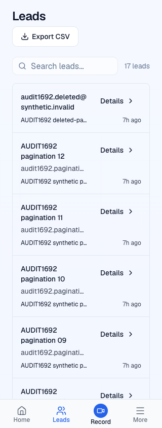
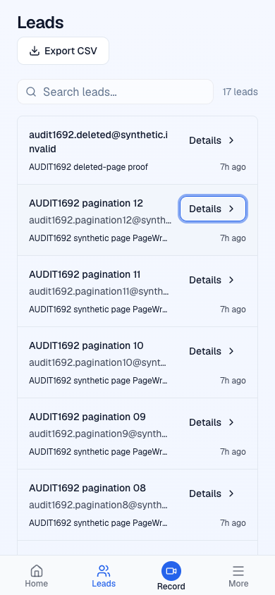
Before is 2e8fd1600; after is 489a5b723. The 390px frame includes focus, and relative ages changed between captures. These are synthetic test contacts. Reviewers retain caveats about density, email wrapping, unmeasured performance and incomplete accessibility evidence. No full-product score is calculated.
At 2e8fd1600, Leads Details and the marketing header use quieter controls. Empty editor blocks use the existing secondary button style. When recording is blocked, Reload or Share screen has primary emphasis and unavailable Start recording is outlined. Ready and loading behavior remains covered by component tests.
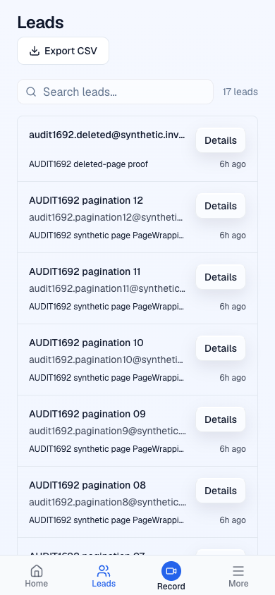
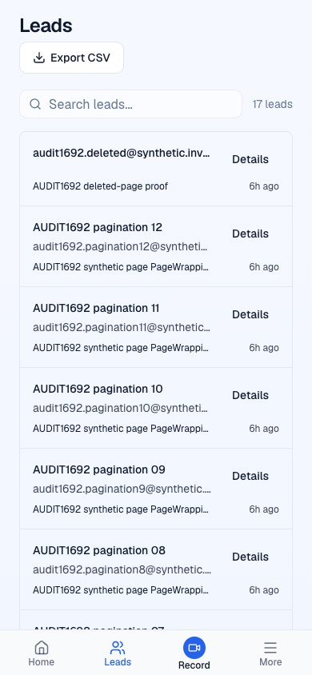
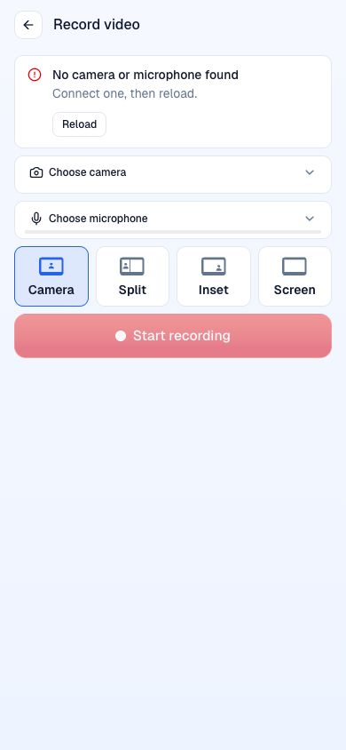
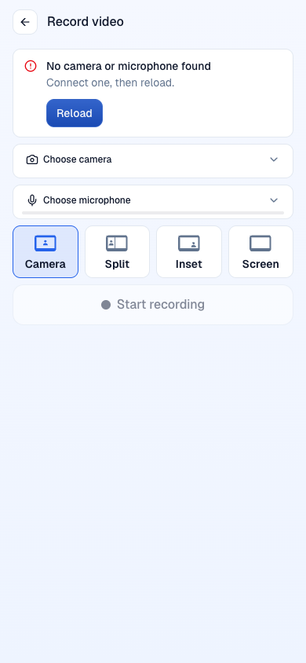
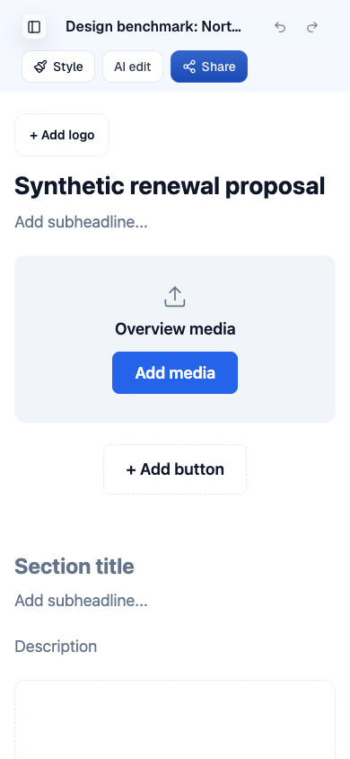
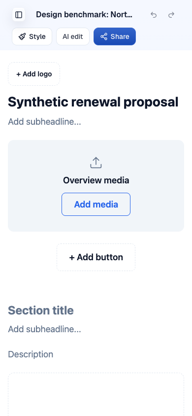
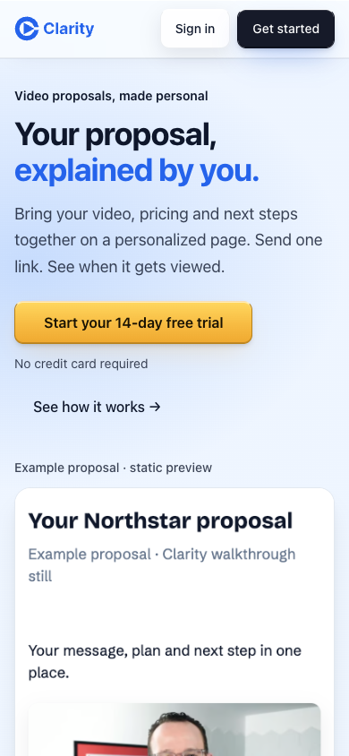
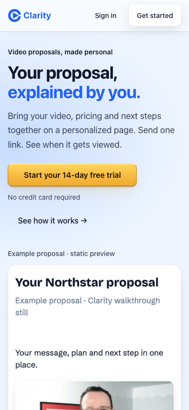
Before frames use e9f7510; after frames use 2e8fd1600. Both are native 390 by 844 captures of the same routes and synthetic data. The browser checker verified Details, search and pagination, the media picker, Share, header navigation, focus return and rendered contrast. Real recording hardware, touch and assistive technology remain untested. A viewport-resize painting inconsistency is recorded separately. Matched scores below use only criteria supported for both reviewers and both phases.
Filled bars show after; dark markers show before. Scale: 0–10. Both models use the same supported criteria within each scope.
These are four limited scopes, not full-product grades. Earlier numbers appeared incidentally in the supplied baseline report, so complete numerical blinding cannot be claimed.
Opus 5.5 locked its ratings before reading another review or the reference images. These partial scores cover observed states, with 73.78% of the expected criterion and product-area weight supported. They are not a whole-product total and are not directly comparable with the narrower GPT iteration scores.
| Area | Partial / 10 | Criterion coverage |
|---|---|---|
| Marketing | 6.68 | 88% |
| Onboarding | Not scored | 0% |
| Library, Home only | 6.40 | 86% |
| Recorder, missing-device state | 5.59 | 78% |
| Editor | 6.50 | 96% |
| Sharing | 6.83 | 96% |
| Buyer page | 6.80 | 70% |
| Analytics, Leads only | 6.17 | 96% |
| Settings, including Billing card and Help | 6.05 | 78% |
| Billing lifecycle | Not scored | 0% |
The Leads assessment uses captures from 7615152, before the e9f7510 contrast correction. Editor and sharing frames retain their recorded earlier commit attribution. The recorder assessment covers missing devices, not successful recording. Onboarding and billing lifecycle remain unscored.
The verified refinement reduces competing action emphasis in Leads, recorder recovery, empty editor media slots and the marketing header. It passed practical browser verification; the matched two-model results are shown above.
Two independent reviewers scored the same original capture packet. The seven criteria both scored for all ten products cover 52% of rubric weight: task clarity, hierarchy, typography, layout, color, trust copy and brand craft. Each reviewer has equal weight in the mean. These are historical marketing frames, not current Clarity or signed-in app grades. Some frames include transient notices or incomplete animation.
| Product | GPT-6.1 Sol | Opus 5.5 | Mean / 10 |
|---|---|---|---|
| Clarity | 5.46 | 4.96 | 5.21 |
| Attio | 7.69 | 7.88 | 7.79 |
| Supercut | 7.19 | 7.15 | 7.17 |
| Tella | 8.19 | 7.19 | 7.69 |
| Screen Studio | 8.19 | 7.62 | 7.90 |
| Trumpet | 6.23 | 5.54 | 5.88 |
| Pitch | 7.35 | 6.77 | 7.06 |
| Linear | 7.15 | 7.69 | 7.42 |
| Papermark | 7.88 | 7.23 | 7.56 |
| Framer | 8.19 | 7.77 | 7.98 |
Reviewers can disagree. The common subset keeps the arithmetic comparable, but it cannot remove capture limitations or replace the missing Gemini review. No full-product ranking is claimed.
These weights express Clarity's priorities. They are not an industry-standard certification. Missing evidence remains unassessed.
| Criterion | Weight | What it measures |
|---|---|---|
| Task clarity | 10% | Purpose, next action, navigation, information architecture and understandable labels. |
| Hierarchy | 10% | Visual priority, grouping, progressive disclosure and scannability. |
| Typography | 8% | Legibility, type scale, line length, line height and type consistency. |
| Layout | 8% | Alignment, spacing rhythm, density, composition and appropriate use of space. |
| Color | 6% | Color semantics, visual separation and restraint. Technical contrast compliance is scored under accessibility. |
| Consistency | 10% | Predictable controls, terminology, components, navigation and cross-screen behavior. |
| Interaction | 8% | Discoverable affordances, direct manipulation, user control, task efficiency and keyboard alternatives. |
| States | 8% | Useful empty, loading, success, validation, failure and recovery states; preservation of user work. |
| Accessibility | 10% | Measured contrast, semantics, accessible names, focus order/visibility, keyboard use, zoom and motion preferences. Screenshots alone cannot establish this score. |
| Responsive | 8% | Observed phone and desktop usability, overflow, target size, reflow and content priority. |
| Trust copy | 6% | Precise language, reassurance, truthful status, predictable privacy and clear billing/publishing consequences. |
| Brand craft | 4% | Distinctive, coherent identity; polished imagery and details serving this audience and task. |
| Perceived performance | 4% | Observed feedback latency, loading stability, media readiness and motion that does not delay work. Record session conditions; do not infer speed from an image. |
The full-product assessment also weights the editor at 18%, Library at 12%, buyer pages at 12%, marketing/onboarding/recorder/sharing at 10% each, analytics at 8%, and settings/billing at 5% each.
Draft PR #1692 contains the scoped improvements described above. The broader visual design remains in iteration. Check results and captured commits are recorded with each change; the full-product assessment remains incomplete. The PR remains unmerged.
Remaining work includes fuller onboarding and billing evidence, signed-in reference tasks and further visual refinement. A reported analytics count mismatch remains a follow-up.
At commit 919e1a83f, independent browser checks confirmed complete wrapping at 320px and 390px and field-label contrast of at least 16.15:1. Search, page filtering, pagination, and deleted-page link behavior passed at the prior head; the final change only darkened labels. Screen reader, zoom and admin Organizations remain untested. This is a verified scoped improvement, not a full-product design grade.

Only synthetic test data appears in this screenshot. The baseline app screenshots remain private.
No complete three-model grade or 9/10 result is claimed. Competitor account access, additional interaction states, and the remaining reviewer seats are required for the full assessment.
Only public marketing pages appear here. Private app screens, test-account identities and authentication data are excluded.

Public marketing capture. This image does not establish signed-in app quality.

Public marketing capture. This image does not establish signed-in app quality.

Public marketing capture. Animation readiness uncertain; recollection needed before final grading.

Public marketing capture. This image does not establish signed-in app quality.

Public marketing capture. This image does not establish signed-in app quality.

Public marketing capture. Animation readiness uncertain; recollection needed before final grading.

Public marketing capture. This image does not establish signed-in app quality.

Public marketing capture. Animation readiness uncertain; recollection needed before final grading.

Public marketing capture. This image does not establish signed-in app quality.

Public marketing capture. This image does not establish signed-in app quality.
At commit 32269ae32, independent browser checks confirmed two toolbar rows at 320px and 390px, visible Style and Share labels, and a working one-row desktop header. The Style palette fits at 320px. Escape closes the nested color picker before the Style panel and returns focus to the appropriate opener. The AI popover also returns focus correctly.
Share opens its dialog without publishing. This verifies the tested interactions; it is not a full editor score or a screen-reader certification.

Recorder recovery and labels were verified at a4aa2e7. Selected-label contrast was at least 14.40:1, and the embedded recorder fit at 320px and 390px. Real hardware, screen reader and zoom remain unassessed.